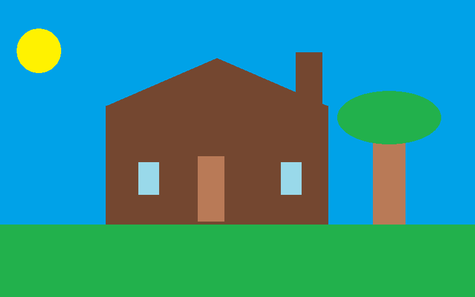

For our project, we had to draw a house in Microsoft Paint that had a sun, a tree, and house with two windows, a door, a sloped top and a chimney.

Afterwards we made instructions for the house we designed, so another member in our class could reproduce out house. We tried to make the directions as clear as possible in order to get a similar house.
The instructions can be found here.
The house that was remade using my instructions is right below.
Remarkably. the houses are very similar.
After that, we used Processing to create an animation of our house.
For a comparison of the different programs and programming languages that we used click here.